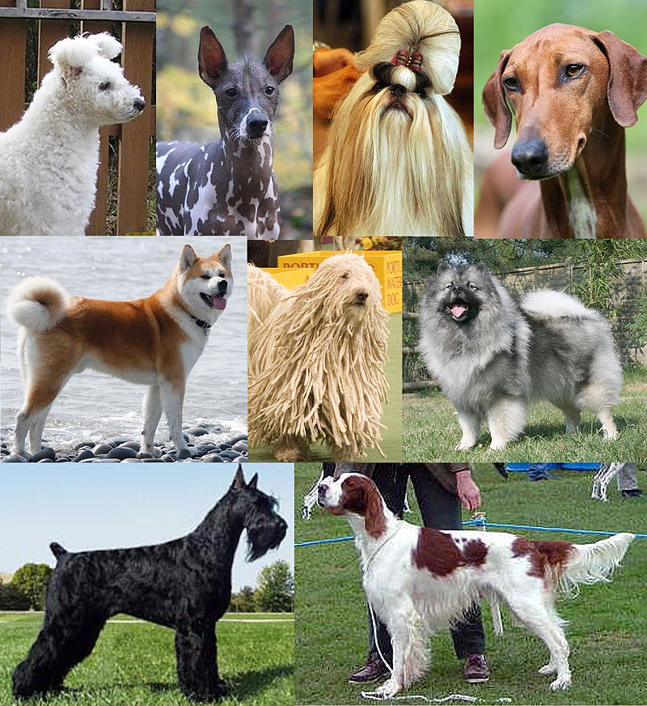
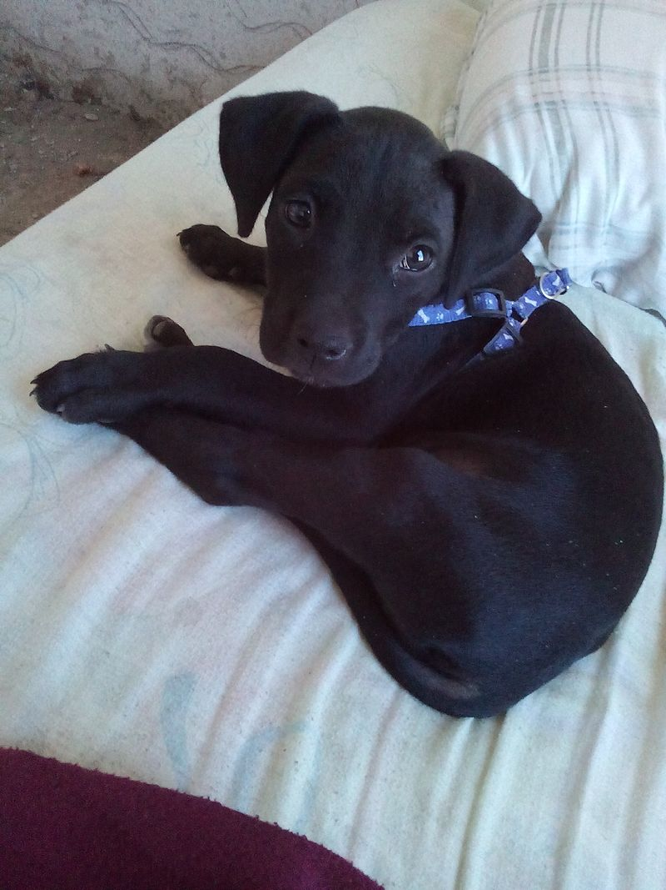

El perro (Canis lupus familiaris),123 llamado perro doméstico o can,4 y coloquialmente chucho5 o tuso,6 y también choco,7 es un mamífero carnívoro de la familia de los cánidos, que constituye una subespecie del lobo (Canis lupus). En 2001, se estimaba que había cuatrocientos millones de perros en el mundo.
8 Su tamaño o talla, su forma y pelaje es muy diverso según la raza. Posee un oído y olfato muy desarrollados,siendo este último su principal órgano sensorial. Su longevidad media es de unos trece a quince años, aunque las razas pequeñas pueden alcanzar hasta veinte años o más, mientras que las razas gigantes solo viven nueve o diez años.
Al igual que los lobos, los perros tienen un pelaje, una capa de pelos que los cubre el cuerpo. El pelaje de un perro puede ser un «pelaje doble», compuesto de una capa inferior suave y una capa superior basta. A diferencia de los lobos, los perros pueden tener un «pelaje único», carente de capa inferior. Los perros con un pelaje doble, como los lobos, están adaptados para sobrevivir en temperaturas frías y tienden a provenir de climas más fríos.
Vista: La visión del perro parece adaptada para la caza: No tiene gran agudeza visual de detalles, pero tienen excelente percepción de movimientos. Tiene excelente visión nocturna o crepuscular, debido al uso del tapetum lucidum —una pantalla reflectiva dentro del ojo—. El campo visual del perro se encuentra entre los 240 - 250 grados, mucho mayor que el humano que es de aproximadamente 180 grados. Tienen una forma de visión dicromática llamada deuteranopia que en los humanos se considera una forma de daltonismo que afecta el rojo y el verde. Los perros perciben tonalidades de amarillo y de azul, pero al rojo lo perciben amarillo y al verde lo ven gris.
Oído: El campo de audibilidad de los perros es aproximadamente de 40 Hz a 60 000 Hz.Detectan sonidos tan graves como 16-20 Hz —en comparación con 20-70 Hz en los humanos— y también por encima de 45 kHz48 —en comparación con 13-20 kHz en los humanos—, y además tienen un grado de movilidad de las orejas que les permite determinar rápidamente el origen exacto de un sonido. Dieciocho o más músculos pueden inclinar, rotar, levantar o bajar las orejas de un perro. Además, puede localizar el origen de un sonido mucho más rápido que un humano y detectar sonidos a una distancia hasta cuatro veces mayor que los humanos. Los perros con una forma de la oreja más natural, como las orejas de cánidos salvajes como el zorro, suelen oír mejor que los perros con las orejas más flexibles típicas de muchas razas domésticas.
Olfato: Mientras que el cerebro humano es dominado por una gran corteza visual, el cerebro canino es dominado principalmente por una corteza olfativa. El bulbo olfativo de los perros, en proporción al tamaño total del cerebro, es unas cuarenta veces mayor que el de los humanos. Según la raza, los perros tienen entre 125 y 220 millones de células olfativas extendidas sobre un área del tamaño de un pañuelo de bolsillo —en comparación con cinco millones de células extendidas sobre el área de un sello en los humanos—.414950 Los bloodhound son la excepción, con aproximadamente 300 millones de receptores olfativos. Los perros pueden distinguir olores a concentraciones casi 100 millones de veces inferiores a las que pueden distinguir los humanosGusto: Entre los sentidos caninos, el del sabor es el que menos se ha investigado y a menudo se le ha relacionado con el olfato. Los perros pueden distinguir los sabores básicos de manera similar a los humanos, aunque casi no distinguen el salado. Sin embargo, los gustos preferidos pueden diferir mucho de un perro a otro, pues parece que no eligen la comida según el tipo de gusto, sino según su intensidad —fuerte sabor / gusto suave—. Los primeros meses de la vida de un cachorro son bastante importantes en este sentido ya que suelen probar muchos sabores diferentes cuando son jóvenes también desarrollarán un gusto por la variedad cuando sean adultos. Al igual que los humanos y que muchos otros animales, los perros tienen la capacidad de asociar determinados gustos con los problemas de salud. Si un alimento los hace enfermar o hace que se encuentren mal, tenderá a evitar el sabor de este alimento en el futuro. Esto forma parte de un mecanismo de defensa instintivo, que protege a los animales de envenenarse por la ingestión frecuente de sustancias tóxicas.
Tacto: Los perros utilizan el sentido del tacto para comunicarse entre ellos y con otras especies. Si se hace apropiadamente, tocar un perro puede servir para estimularlo o relajarlo. Se trata del primer sentido que se desarrolla en los cachorros recién nacidos y las perras comienzan a lamer y acariciar sus crías poco después del nacimiento. Algunos estudios han sugerido incluso que los perros pueden detectar movimientos en el abdomen de la madre incluso antes de nacer y que las perras que son mimadas durante la gestación dan a luz crías más dóciles.55 Los perros tienen sensores táctiles en todo el cuerpo, pero los cojinetes, la columna vertebral y la región de la cola son algunas de las zonas más sensibles.
Los perros son apreciados por su inteligencia. La inteligencia canina se refiere a la habilidad de un perro de procesar la información que recibe a través de sus sentidos para aprender, adaptarse y resolver problemas. La etología cognitiva es la disciplina que se encarga de estudiar está área dentro de la cognición animal. Algunos estudios de antropología evolutiva se centran también en la identificación de las capacidades cognitivas especiales que el perro posee, y que ha desarrollado debido a su estrecho contacto con el ser humano; como es la habilidad de reconocer un vocabulario extenso. En un ejercicio para observar su nivel de comprensión pasivo del vocabulario humano, se le pidió a un humano sentado detrás de una barrera transparente que sostuviera un juguete, y con voz monótona, le diera al perro la orden «trae» (bring). El perro se dirigió a un círculo en donde estaban dispersos diferentes objetos —desde un juguete exactamente igual al que el humano solicitó, hasta otro tipo de cosas con texturas y olores diferentes—, el animal observo por un momento el círculo de objetos para dirigirse a por el juguete exacto que se le había pedido y después presentarlo al humano. También se le pidió que trajera determinados objetos utilizando solamente la fotografía o réplica en miniatura del objeto. El estudio fue complementado con dos condiciones de control adicionales para evitar que el animal actuara por preferencias pre-establecidas. El ejemplar utilizado —Border collie— pudo reconocer hasta 200 palabras del vocabulario humano.
